Lecture 7: Optimal Execution under Price Impact¶
Agenda¶
- Market impact of meta orders
- Impact profile
- Empirical market impact profiles
- Optimal execution as variational and control problems
- risk neutral
- mean-qv optimization
- The Almgren-Chriss model and the Almgren-Chriss optimal liquidation strategy
- The Obizhaeva-Wang model
- Combining Almgren-Chriss and Obizhaeva-Wang: the ACOW model
- Numerical examples
What is market or price impact?¶
Empirically, in average a buy order pushes the price up whereas a sell order sends the price down. This empirically observed market phenomenon is referred to as price impact of transaction or trading.
A price impact model is a model aiming at quantify the relationship between the transacted volume and price.
The square-root formula for market impact¶
-
For many years, traders have used the simple sigma-root-liquidity model described for example by Grinold and Kahn in 1994.
-
Software incorporating this model includes:
- Salomon Brothers, StockFacts Pro since around 1991
- Barra, Market Impact Model since around 1998
- Bloomberg, TCA function since 2005
-
The model is always of the rough form
\(\(\Delta P = \text{Spread cost} +\alpha\,\sigma\,\sqrt{\frac Q V}\)\) where \(\sigma\) is daily dollar volatility, \(V\) is daily volume, \(Q\) is the number of shares to be traded and \(\alpha\) is a constant pre-factor of order one.
Commonly applied algorithms¶
-
VWAP “Volume weighted average price”
- Trades at constant rate in volume time
-
POV “Percentage of volume”
- Participate at a certain percentage of market volume
-
TWAP “Time weighted average price”
- Trades at constant rate in wall clock time
-
IS “Implementation shortfall”
- Trades faster at the beginning and more slowly at the end
- To balance the risk of a worse price against the benefit of better execution from being patient.
Terminology¶
- Metaorder means that a sufficiently large order that cannot be filled immediately without eating into the order book.
- Such orders need to be split.
- Each component of a metaorder is referred to as a child order.
- The impact profile refers to the average path of the stock price during and after execution of a metaorder.
- Completion refers to the timestamp of the last executed child order.
Schematic of impact profile¶

Figure: The impact profile
Stylized features of impact profile¶
-
When a buy metaorder of length \(T\) is sent, its immediate effect is to move the price upwards (to \(S_T\) say).
-
After completion, the price reverts to some price \(S_{\infty}\) (which may be the starting price \(S_0\)).
-
Market impact thus has two components: one transient and one permanent.
-
Knowledge of the metaorder impact profile is key to the derivation of optimal execution strategies.
Empirical market impact profiles from [Bacry et al.]¶

Empirical market impact profiles from [Zarinelli et al.]¶

Notations¶
The following notations will be used throughout.
- \(S_t\): mid or efficient price
- \(\tilde S_t\): transaction price. Thus, $\tilde S_t = S_t + $ spread.
- \(\sigma\): volatiltiy of stock.
- \(Z_t\): Brownian motions
- \(v_t\): trading rate at time \(t\)
- \(X_t\): remaining orders to be executed at time \(t\)
Almgren and Chriss¶
-
Almgren and Chriss treats the execution of a meta order as a tradeoff between risk and execution cost.
-
According to their formulation:
- The faster an order is executed, the higher the execution cost
- The faster an order is executed, the lower the risk (which is increasing in position size).
-
Note that this is inconsistent with the empirical success of the square-root formula in describing the cost of meta orders.
The price impact model of Almgren and Chriss¶
For simplicity, we consider liquidation of an existing position \(X\). Denote the position at time \(t\) by \(x_t\) with \(x_0=X\) and \(x_T=0\).
Almgren and Chriss model market impact and slippage as follows.
where \(X_t = x_0 + \int_0^t v_s ds\).
Note¶
- \(\eta v_t\): temporary impact
- \(\gamma (X_t - x_0)\): permanenty impact
- \(X_t = x_0 + v t\) if \(v_t \equiv v\), a constant.
Impact profile in the Almgren and Chriss model¶
T = 1
vwap_AC = lambda t: t/T*(t <= T) + T*(t > T)
t = np.linspace(0, 2, 200)
plt.figure(figsize=(8, 6))
plt.plot(t, vwap_AC(t), color='orange', label='Almgren-Chriss')
plt.vlines(x=1, ymin=0, ymax=2, linewidth=0.5, ls='dotted')
plt.ylim([0, 1.5])
plt.xlabel(r'$t$', fontsize=15)
plt.ylabel(r'$\mathbb{E}|S_t - S_0|$', fontsize=15)
plt.title('Almgren-Chriss price path', fontsize=18);
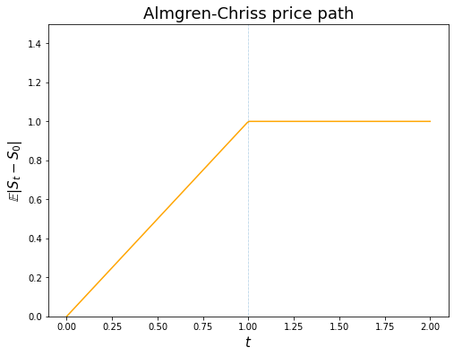
Inconsistency with empirical observation¶
- This price path is inconsistent with empirical observation:
- The average price path during execution is linear.
- There is no price reversion after completion of the order.
P&L and cost of trading of a trading strategy¶
Let \(x_t\) be a trading strategy. The corresponding P&L (up to time \(t\)), denoted by \(\Pi_t(x)\), is identified as
-
The first term represents the (fair) value of stock shares that are yet to be transacted.
-
The second term corresponds to the monetary value collected from the shares that have been transacted up to time t.
-
Obviously, should there be no trade in the time interval \([0,t]\), i.e., \(x_s = X\) for all \(s \in [0,t]\), the P&L reads \(\Pi_t(x) = X (S_t - S_0)\); reflecting the P&L from the price movement of the stock.
Implementation shortfall as cost of trading ¶
Negative P&L is also referred to as the implementation shortfall, which will be used as the cost of trading, denoted by \(C\) hereafter.
P&L in Almgren-Chriss model¶
Note that, at the end of execution period \(T\), the P&L reads $$ \Pi_T(x) = x_T (S_T - S_0) + \int_0^T (S_0 - \tilde S_u) d x_u, $$ should there be \(x_T\) shares yet to be transacted. Hence, in Almgren-Chriss model
Therefore, the expected cost corresponding to the trading strategy \(x\) is given by
Expected cost of TWAP in the Almgren and Chriss model¶
For a TWAP, \(v_t = -\frac XT\) where \(X\) is the total trade size and \(T\) is the duration of the order.
The cost per share \(\hat C\) of executing an order using TWAP is therefore
which is linear in the trade size \(X\) and inversely proportional to the duration of the order.
Optimal strategy of a risk neutral trader¶
For a risk neutral trader whose objective is to minimize the cost of trading, the optimal control problem reads
where the state variable \(x_t\) is driven by \(dx_t = v_t dt\) with the constraints \(x_0 = X\) and \(x_T = 0\).
Note that, since \(S_t\) is not involved in the last expression, we end up with a deterministic control problem which can be solved by the solution to its assocated HJB equation or, due to the simplicity of the dynamics of \(x_t\), further reduced to a variational problem.
Variational problem¶
with \(v_t=\dot x_t\) and \(x_0 = X\), \(x_T = 0\).
The Euler-Lagrange equation is then
with boundary conditions \(x_0=X\) and \(x_T=0\) and the solution is obviously
Risk neutral trader: TWAP is optimal in Almgren-Chriss¶
As naive as the TWAP strategy may look, it is indeed optimal for a risk neutral trader in the Almgren-Chriss model.
Penalty by quadratric variation¶
[Almgren and Chriss][2] add a risk term that penalizes the approximate variance of the trading cost. They claim
In fact, by Itô's isomety, it is an equality if \(x_t\) is deterministic.
The expected risk-adjusted cost is then given by (temporarily ignore the path independent term \(\frac\gamma2 X^2\))
for some price of risk \(\lambda\).
-
Note the analogies to physics and portfolio theory.
-
The first term looks like kinetic energy and the second term like potential energy.
-
The expression looks like the objective in mean-variance portfolio optimization.
-
The Euler-Lagrange equation becomes
with
The solution is a linear combination of terms of the form \(e^{\pm \kappa t}\) that satisfies the boundary conditions \(x_0=X\), \(x_T=0\).
Mean-QV trader: The Almgren-Chriss strategy¶
For risk averse traders, by using the quadratic vartion of P&L during execution to penalize the terminal P&L/trading cost, the following strategy, referred to as the Almgren-Chriss strategy, is optimal.
where \(\kappa = \sqrt{\frac{\lambda\sigma_S^2}\eta}\), \(\lambda\) is the parameter that proxies the trader's risk aversion.
Note¶
- The strategy is deterministic.
- Almgren-Chriss strategy gives an example of Implementation Shortfall type: trade fast at the beginning and more slowly towards the end.
# order execution horizon
T = 1
# number of shares to execute
X = 10_000
# the Almgren-Chriss strategy
opt_AC = lambda t, kappa: X*np.sinh(kappa*(T - t))/np.sinh(kappa*T)
# plot
t = np.linspace(0, T, 100)
plt.figure(figsize=(8, 5))
for kappa in np.arange(1, 6):
plt.plot(t, opt_AC(t, kappa), label=f'$\kappa$={kappa}')
plt.title('Almgren-Chriss strategy for various $\kappa$')
plt.xlabel(r'$t$')
plt.ylabel(r'$x$')
plt.legend();
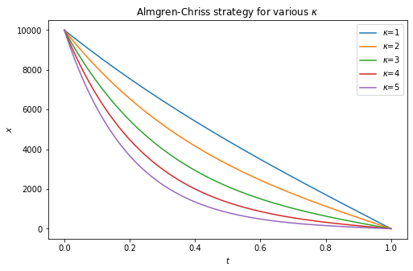
Applications of the Almgren-Chriss framework¶
-
Although the Almgren and Chriss price process is not particularly realistic, it leads to a tractable framework for solving a number of interesting practical problems.
-
Applications include:
Summary on the Almgren-Chriss model¶
-
The Almgren-Chriss price process is in practice the most widely-used.
-
It forms the basis for many of the algorithms and most of the thinking in algorithmic execution.
- despite the fact that it is unrealistic: market impact decays instantaneously and it is completely incompatible with the square-root law.
-
Because of the analytical tractability of the Almgren-Chriss framework, there are closed-form or quasi-closed-form solutions for many problems of practical interest.
Transient impact models¶
The price process assumed in transient impact model is
-
\(h(v_s)\) is referred to as the instantaneous market impact function, which represents the impact of trading at time \(s\), and \(G(t-s)\) is a decay factor. Note that \(h(v) > 0\) if \(v > 0\); whereas \(h(v) < 0\) if \(v < 0\).
-
The cumulative impact of (others’) trading is implicitly in \(S_0\) and the noise term.
-
The model is a generalization of processes due to Almgren, Bouchaud, and Obizhaeva and Wang.
P&L and cost of trading in transient impact model¶
Note that, at the end of execution period \(T\), the P&L reads $$ \Pi_T(x) = x_T (S_T - S_0) + \int_0^T (S_0 - \tilde S_u) d x_u, $$ should there be \(x_T\) shares yet to be transacted. Hence, in transient impact model (note that \(\tilde S_t = S_t\))
Therefore, the expected cost corresponding to the trading strategy \(x\) is given by
The optimal strategy of a risk neutral trader¶
For a risk neutral trader whose objective is to minimize the expected cost of trading, the optimal control problem reads
where the state variable \(x_t\) is driven by \(dx_t = v_t dt\) with the constraints \(x_0 = X\) and \(x_T = 0\). It is equivalent to a variational problem.
subject to the constraint \(\int_0^T v_t dt = X\).
Lagrange multiplier¶
To derive the Euler-Lagrange equation, consider the Lagrangian
where \(\lambda\) is the Lagrange multiplier.
Euler-Lagrange equation¶
Let \(\varphi\) be a perturbation. Consider the first order criterion for the Lagrangian \(L\):
Since \(\varphi_t\) is arbitrary (because the first order criterion must hold for any perturbation), we must have
(2)
$$
\int_t^T G(s-t) h'(v_t) v_s ds + \int_0^t G(t-s) h(v_s) ds = \lambda
$$
for all \(0 \leq t \leq T\). This is a generalized Fredholm integral equation of the first kind. The Lagrange multiplier \(\lambda\) is determined by the constraint \(\int_0^T v_t dt = -X\).
The Obizhaeva and Wang model¶
The model in [Obizhaeva and Wang][7] is given by
(1) \(\(S_t = S_0 + \eta\,\int_0^t\,v_s\,e^{-\rho\,(t-s)}\,ds + \sigma_S Z_t\)\)
with \(v_t=\dot x_t\).
-
Market impact decays exponentially, i.e., \(G(\tau) = e^{-\rho\tau}\)
-
Instantaneous market impact is linear in the rate of trading, \(h(v) = \eta v\).
The expected cost of trading becomes: $$ \mathcal{C} =\eta\,\int_0^T\int_0^t\,{v}_s\,e^{-\rho\,(t-s)}\,ds\, v_tdt $$
Impact profile in the Obizhaeva and Wang model¶
rhos = [0.6, 1, 1.4]
def twap_ow(t, rho):
term1 = (1 - np.exp(-rho*t))*(t <= T)
term2 = (1 - np.exp(-rho*T))*np.exp(rho*(T-t))*(t > T)
return (term1 + term2)/rho
t = np.linspace(0, 2, 200)
plt.figure(figsize=(8, 6))
for rho in rhos:
plt.plot(t, twap_ow(t, rho), label=f'rho={rho}')
plt.vlines(x=1, ymin=0, ymax=2, linewidth=0.5, ls='dotted')
plt.ylim([0, 1])
plt.xlabel(r'$t$', fontsize=15)
plt.ylabel(r'$\tilde S_t$', fontsize=15)
plt.title('Impact profile in Obizhaeva-Wang model', fontsize=18)
plt.legend();
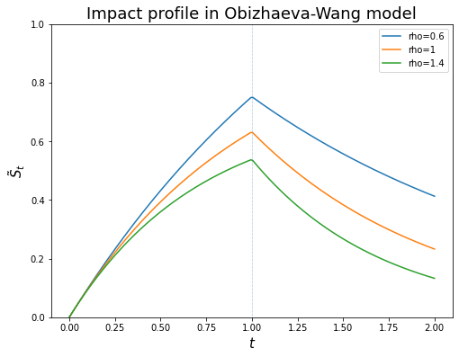
Optimal strategy in Obizhaeva-Wang¶
The Euler-Lagrange equation in this case reads:
which may be rewritten as
which is a Fredholm integral equation of the first kind.
The solution is
The Lagrange multiplier \(\lambda\) is determined by
Thus, \(\frac\lambda\eta = -\frac X{2 + \rho T}\) and
The optimal strategy consists of block trades at \(t=0\) and \(t=T\) and continuous trading at the constant rate \(\rho\) between these two times.
Note¶
- The case \(\rho = 0\) corresponds to the Almgren-Chriss model with only permanent impact. In this case, the strategy suggests a block trade of half of the total shares at the beginning and a block trade of the other in the end. In fact, in this case all strategies are optimal since the expected cost is a constant, independent of the strategies!
Obizhaeva-Wang as a control problem¶
We may recast the optimal execution problem in the Obizhaeva-Wang model as a control problem as follows.
Let
Thus, we can rewrite the dynamic for \(S_t\) as \(S_t = s_0 + Y_t + \sigma_S Z_t\). It follows that the state equations are given by
Objective functional (the expected cost)
Notice that we end up with a deterministic control problem.
Value function¶
As always, the value function \(J\) is defined as
HJB equation¶
The value function will satisfy the following HJB equation.
Turns out the control theory formulation of the optimal execution problem under Obizhaeva-Wang model is pretty tricky since
Special treatment for this type of problems are required.
Combining Almgren-Chriss and Obizhaeva-Wang: the ACOW model¶
We add up the Almgren-Chriss model and the Obizhaeva-Wang model as
where
be the price impact (due to trading). Then \(Y_t\) satisfies the ODE
- \(S_t\): efficient/mid price
- \(\tilde S_t\): traded price
- \(Y_t\): (stochastic) impact to the efficient/mid price due to trading as in Obizhaeva-Wang
- \(\phi v_t\): linear instantaneous impact
- \(\eta v_t\): linear temporary impact
- \(\gamma (X_t - X_0)\): linear permanent impact
Note¶
- Without the \(Y\) term, the model reduces to Almgren-Chriss.
- If \(\gamma = \eta = \sigma = 0\), the model reduces to Obizhaeva-Wang.
- The rationale is that Almgren-Chriss takes care of the permanent impact component whereas the trasient impact component for Obizhaeva-Wang.
Impact profile under the model¶
T = 1
twap_AC = lambda t: t/T*(t <= T) + T*(t > T)
rho = 1.5
m = 2/3
def twap_model(t):
term1 = (1 - np.exp(-rho*t))*(t <= T)
term2 = (1 - np.exp(-rho*T))*np.exp(rho*(T-t))*(t > T)
invent = m*(term1 + term2)/rho
return invent + twap_AC(t)
t = np.linspace(0, 2, 200)
plt.figure(figsize=(8, 6))
plt.plot(t, twap_AC(t), ls='dotted', color='blue', label='Almgren-Chriss')
plt.plot(t, twap_model(t), ls='dashed', color='blue', label='ACOW')
plt.vlines(x=1, ymin=0, ymax=2, linewidth=0.5, ls='dotted')
plt.ylim([0, 1.8])
plt.xlabel(r'$t$', fontsize=15)
plt.ylabel(r'$\tilde S_t$', fontsize=15)
plt.title('Impact profile under TWAP', fontsize=18)
plt.legend();
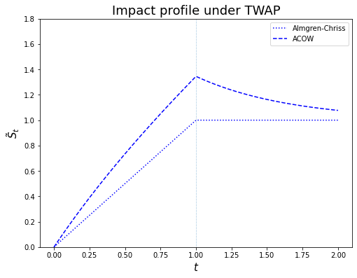
Control problem¶
State equations
Objective functional (the expected P&L, marked to the price \(s_0\))
Note that, by applying integration by parts, we have
Thus,
Penalize the final block trade by \(-\beta X_T^2\). The objective functional reads
Matrix notations¶
Rewrite the equation in matrix notations.
LQ problem¶
We obtain the following LQ control problem
with the controlled SDE given by
Value function and HJB equation¶
Let \(V\) be the value function
\(V\) satisfies the following HJB equation
with terminal condition \(V(T, \bx) = \bx'\mbP\bx\).
Note¶
- \(\mbR = -\eta\) is negative definite since we have a maximization problem.
Optimal control¶
Ansatz¶
Assume the ansatz for value function \(V(t, \bx) = \bx' H_1 \bx + H_0\).
The optimal (feedback) control \(\bu^*\) becomes
Matrix Riccati equation¶
Compare the coefficients and obtain the matrix Riccati equation
with terminal condition \(H_1(T) = \mbP\) and \(H_0(T) = 0\).
Solution to the Riccati equation¶
The solution to the matrix Riccati equation for \(H_1\) can be characterized by the solution to the following linear system of equations
where \(M\), \(N\) satisfy the linear ODEs
with terminal conditions \(M_T = H_1(T) = \mbP\) and \(N_T = I\).
The solution to the linear system can be written as
where
The expected trading trajectory \(x_t = \Eof{X_t}\) under optimal control \(\bu^*\) satisfies
where \(y_t = \Eof{Y_t}\).
Note that we have
Thus,
since \(y_0 = 0\).
Numerical examples¶
# liquidation horizon
T = 1
# number of shares to liquidate
x0 = 20_000
# mean reverting rate rho
# rho in the exponential decay kernel
rho = 10 # 1e-3
# parameters for market impact from Almgren-Chriss
eta = 2.5*1e-6 # temporary impact coefficient
gamma = 2.5*1e-7 # permanent impact coefficient
# final block trade penalty
beta = 1000*eta #, 100*eta, 1000*eta, 10_000*eta
# coefficient for inventory cost
# coefficient for linear instantaneous impact function
phi = 50*eta # eta, 5*eta, 10*eta, 100*eta
print(f'(gamma + phi)/2 - beta is {(gamma+phi)/2 - beta}.')
(gamma + phi)/2 - beta is -0.0024373749999999994.
# matrices
A = np.array([0, 0, 0, -rho]).reshape(2, 2)
P = np.array([(gamma + phi)/2 - beta, 0, 0, 0]).reshape(2, 2)
Q = np.array([0, -rho/2, -rho/2, 0]).reshape(2, 2)
B = np.array([1, phi]).reshape(2, 1)
# Psi
Psi = np.array([[0, 0, 0, rho/2], [0, rho, rho/2, 0], [1/eta, phi/eta, 0, 0],
[phi/eta, phi**2/eta, 0, -rho]])
# solution H1
def H1(t):
# Matrix [P I]'
PI = np.concatenate([P.reshape(4), np.identity(2).reshape(4)]).reshape(4, 2)
# exponential Psi times [P I]'
ePsiPI = lambda t: expm(-(T-t)*Psi).dot(PI)
M, N = ePsiPI(t)[:2], ePsiPI(t)[2:]
return M.dot(np.linalg.inv(N))
# first order criterion for v
def v_opt(bx, t):
BtH = B.transpose().dot(H1(t))
return BtH.dot(bx)/eta
# ODE for x and y
def f(bx, t):
x = bx[0]
y = bx[1]
dx = v_opt(bx, t)
dy = phi*v_opt(bx, t) - rho*y
return np.array([dx, dy]).reshape(2)
# solve optimal x and y numerically
def solve_opt_xy(n_steps=500):
t = np.linspace(0, T, n_steps+1)
bx0 = np.array([x0, 0])
soln1 = odeint(f, bx0, t)
x_opt = soln1[:, 0]
y_opt = soln1[:, 1]
return x_opt, y_opt
# plot optimal trajectory for x
plt.figure(figsize=(8, 6))
plt.plot(t, x)
plt.xlabel(r'$t$', fontsize=15)
plt.ylabel(r'$x$', fontsize=15)
plt.hlines(y=0, xmin=0, xmax=1, ls='dotted');
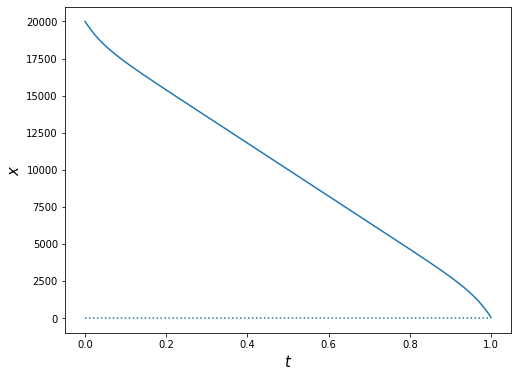
# plot trajectory for y under optimal policy
plt.figure(figsize=(8, 6))
plt.plot(t, y)
plt.xlabel(r'$t$', fontsize=15)
plt.ylabel(r'$y$', fontsize=15)
plt.hlines(y=0, xmin=0, xmax=1, ls='dotted', color='k');
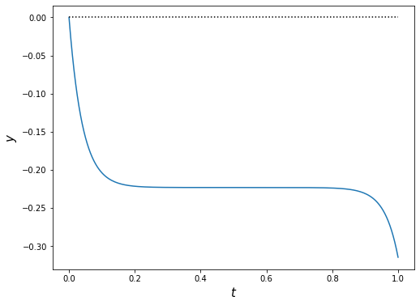
# the optimal trading rate v
v =np.array([])
for i in range(len(t)):
BtH = B.transpose().dot(H1(t[i]))
v = np.concatenate([v, BtH.dot([x[i], y[i]])/eta])
# plot optimal trajectory for v
plt.figure(figsize=(8, 6))
plt.plot(t, v)
plt.xlabel(r'$t$', fontsize=15)
plt.ylabel(r'$v$', fontsize=15);
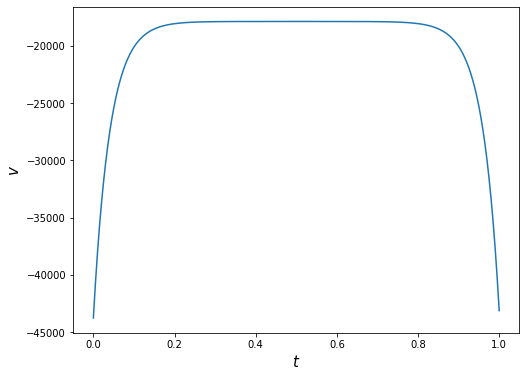
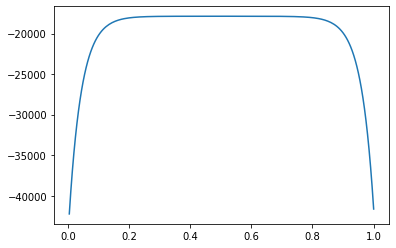
Value distribution¶
Let's compare the performance of optimal trading strategy to TWAP and Almgren-Chriss in this setting.
Create a python class for evaluating value function by simulation¶
import numpy as np
from scipy.stats import norm
import seaborn as sns
class ValueDistribution:
'''
x0: number of shares to liquidate/acquire
T: liquidation/acquistion horizon
gamma: permanent impact coefficient
eta: temporary impact coefficient
rho: mean reverting rate
beta: final block trade penalty
phi: transient impact coefficient
sigma: volatility of transient impact
'''
def __init__(self, params, strategy, n_steps=100):
self.T = params['T']
self.x0 = params['x0']
self.eta = params['eta']
self.gamma = params['gamma']
self.beta = params['beta']
self.phi = params['phi']
self.rho = params['rho']
self.sigma = params['sigma']
self.n_steps = n_steps
# strategy v as a function of x, y, t
self.strategy = strategy
# self.alpha = 2*self.eta/(2*self.beta - self.gamma)
def simulate(self, n_sim=10_000):
n_steps = self.n_steps
v = self.strategy
dt = self.T/self.n_steps
gamma, phi, eta, beta, rho = self.gamma, self.phi, self.eta, self.beta, self.rho
# initialize
y = np.zeros([n_sim, n_steps+1])
x = np.ones([n_sim, n_steps+1])*self.x0
V0 = np.zeros([n_sim, n_steps+1])
for step in range(self.n_steps):
dz = norm.rvs(size=n_sim)*np.sqrt(dt)
dy = (phi*v(x[:,step], y[:,step], step*dt) - rho*y[:,step])*dt + sigma*dz
dx = v(x[:,step], y[:,step], step*dt)*dt
dV0 = -(rho*x[:,step]*y[:,step] + eta*v(x[:,step], y[:,step], step*dt)**2)*dt
x[:,step+1] = x[:,step] + dx
y[:,step+1] = y[:,step] + dy
V0[:,step+1] = V0[:,step] + dV0
self.x, self.y, self.V0 = x, y, V0
self.V = ((gamma + phi)/2 - beta)*x[:,-1]**2 + V0[:,-1]
return self.V.mean()
def V_hist(self, bins=50, kde=True, stat='density', element='step'):
sns.histplot(self.V, bins=bins, kde=kde, stat=stat, element=element)
plt.title('Histogram of V', fontsize=20);
return None
def __call__(self):
pass
Policy 1: TWAP¶
# parameters
sigma = 0.1
params = {'T': T, 'x0': x0, 'eta': eta, 'gamma': gamma, 'rho': rho, 'beta': beta, 'phi': phi, 'sigma':sigma}
# A version of TWAP strategy
alpha = 2*eta/(2*beta - gamma)
v_twap = lambda x, y, t: -x/(T - t + alpha)
# instantiate the class and simulate
vd_twap = ValueDistribution(params=params, strategy=v_twap, n_steps=n_steps)
vd_twap.simulate()
19601.848785942813
Sample path of running reward¶
n_sim, n_steps = 10_000, 200
dt = T/n_steps
t = np.arange(0, T+dt, dt)
n_path = np.random.choice(n_sim)
plt.plot(t, vd_twap.V0[n_path,:]);
print(n_path)
4288
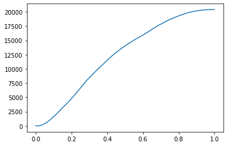
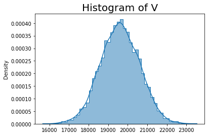
Optimal policy¶
19747.787166332717
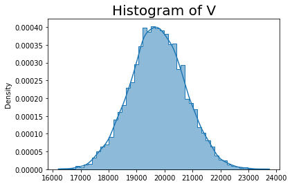
Put together the histograms¶
sns.histplot(vd_twap.V, bins=50, stat='density', element='step', kde=True);
sns.histplot(vd_opt.V, bins=50, stat='density', color='orange', element='step', kde=True);
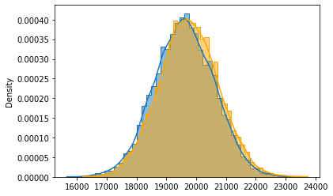
Sample path of liquidation¶
n_path = np.random.choice(n_sim)
plt.plot(t, vd_opt.x[n_path,:])
plt.plot(t, vd_twap.x[n_path,:], color='orange');
n_path
817
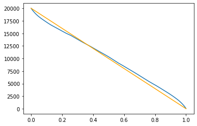
Sample path of transient impact¶
plt.figure(figsize=(12,6))
plt.subplot(1, 2, 1)
plt.plot(t, vd_opt.y[n_path,:])
plt.title('Transient impact under optimal strategy', fontsize=15)
plt.subplot(1, 2, 2)
plt.title('Transient impact under TWAP', fontsize=15)
plt.plot(t, vd_twap.y[n_path,:]);
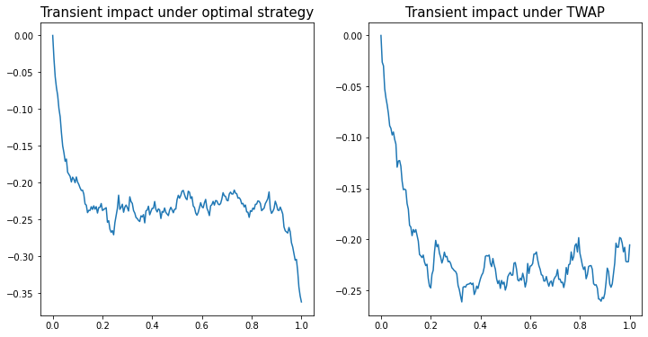
References¶
- Robert Almgren and Neil Chriss, Optimal execution of portfolio transactions, Journal of Risk, 3, 5–40, (2001).
- Emanuel Bacry, Adrian Iuga, Matthieu Lasnier, and Charles-Albert Lehalle, Market impacts and the life cycle of investors orders, Market Microstructure and Liquidity, 1(2), 1550009, (2015).
- Jim Gatheral, Lecture notes on market microstructure models, Baruch MFE course .
- Anna Obizhaeva and Jiang Wang, Optimal trading strategy and supply/demand dynamics, Journal of Financial Markets, 16(1), 1–32, (2013).
- Elia Zarinelli, Michele Treccani, J. Doyne Farmer, and Fabrizio Lillo, Beyond the square root: Evidence for logarithmic dependence of market impact on size and participation rate, Market Microstructure and Liquidity, 1(2), 1550004, (2015).